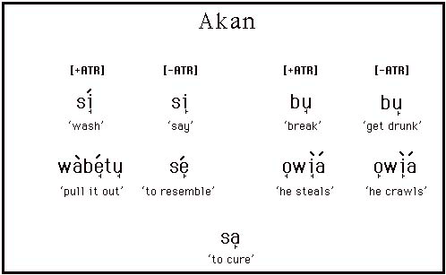
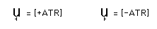
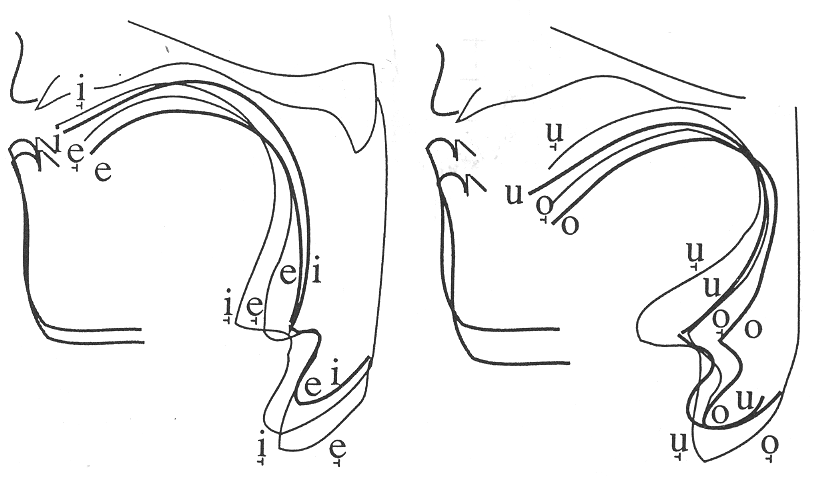
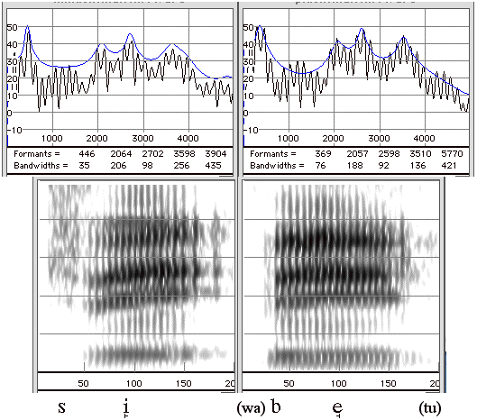
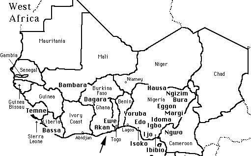

Akan is a Kwa language of the Niger-Kordofanian family spoken by approximately 4.5 million people in Ghana. The major dialects include Fante, Asante and Akuapem; the latter two are called Twi. The relevant phonetic contrast illustrated here is between advanced tongue root [+ATR] vowels and their plain [-ATR] counterparts. These are transcribed as follows:

The contrast exists for the high and mid vowels. The low vowel [a] is [-ATR].
The X-rays below illustrate the tongue position of the contrasting vowels.
Only the plus ATR vowels are marked by a subscript diacritic. The minus ATR vowels are unmarked.

Note that the high front –ATR vowel in si has similar formants to the mid front +ATR vowel in (wa)be(tu). However, in the +ATR vowel the higher formants have a higher intensity, thus making a ‘brighter’ sound.

Click on the above transcriptions to hear the two sounds.
References
Lindau, M. 1979. The feature expanded. Journal of Phonetics 7.163-76.
Stewart, J.M. 1967. Tongue root position in Akan vowel harmony. Phonetica 16.185-204.
Ladefoged, P. and I. Maddieson. 1996. Sounds of the World’s Languages Oxford: Blackwells. pp 300-306
